Hesham Abdelhamed
Filmmaker · Video Editor · Director
Experience
Multimedia Producer – FLOW Medical Solutions (HMG)
Working within the marketing department, capturing inspiring stories that reflect FLOW’s values
and documenting project outcomes through video production, editing and visual design—
ensuring every piece of content aligns with the brand and creates meaningful impact.
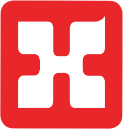
Freelance Filmmaker
Worked on specialized projects across film production, advertising, sports, medical content
and documentary storytelling. Collaborated with institutions such as BBC, DW and French Television
on high-quality productions.
 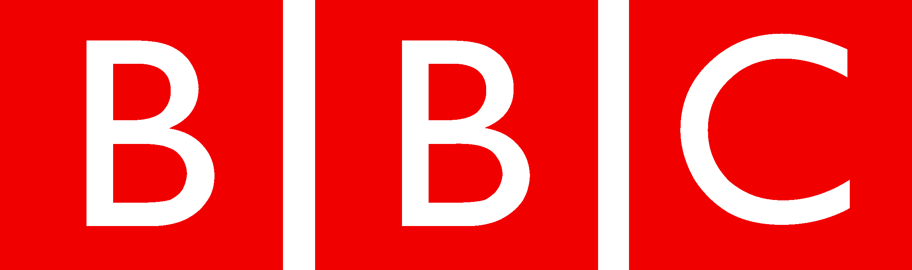
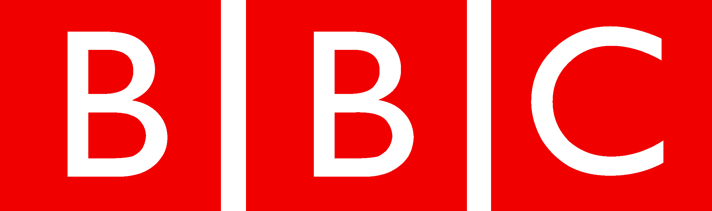
Manager of Multimedia – Baheya Foundation
Led filming and editing, crafting inspiring stories of women fighting breast cancer and presenting
their journeys with empathy, strength and respect.

Filmmaker – Media Vision Company International
Produced over 40 documentary films across several countries, exploring diverse cultural,
social and human stories as part of long-form documentary series.

Multimedia Reporter – Al-Manassa Newsroom
Covered social, cultural and political stories using multimedia journalism, producing
impactful visual news content for digital platforms.
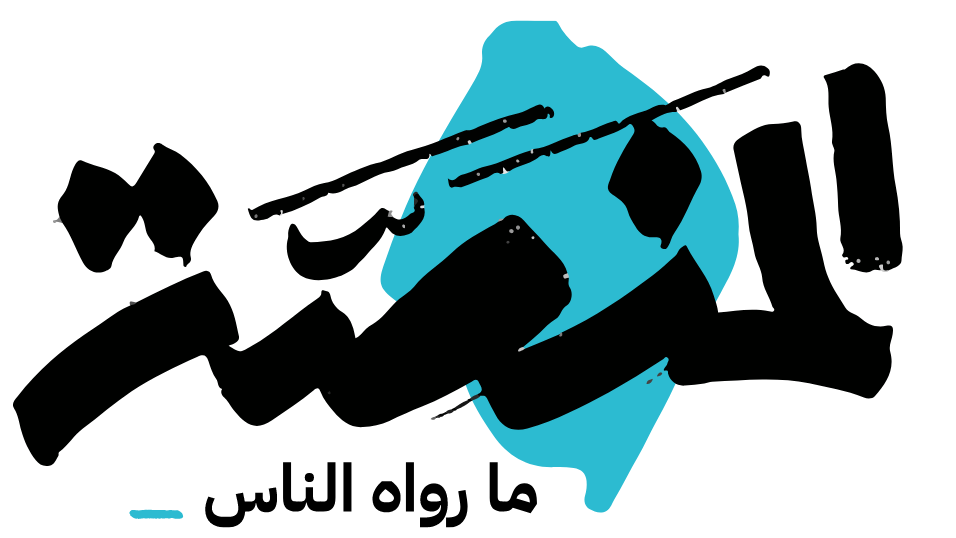
Videographer / Video Editor – WAYA Media
Filmed and edited business and startup-focused stories, delivering modern,
high-impact visuals tailored for social media growth.
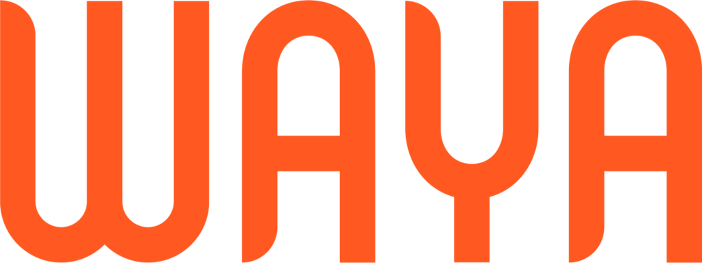
Multimedia Producer – Gamma Agency for Media Production
Produced visual content for major international networks including Al Arabiya,
BBC, DW, Reuters and AFP across news, documentary and feature formats.
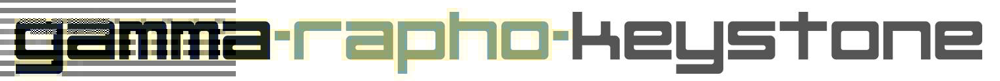
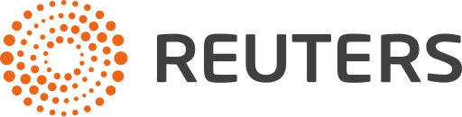
 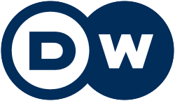
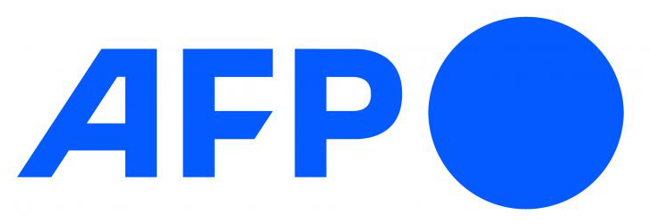
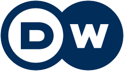
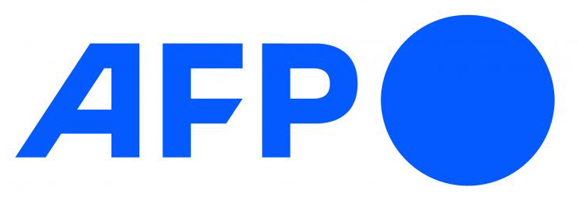

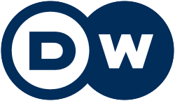
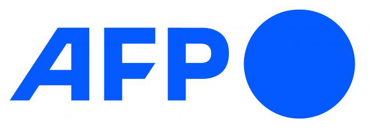
Camera Operator / Video Editor – AlAraby TV
Worked on news features and TV reports as part of the multimedia production team,
ensuring high-quality visual storytelling for broadcast.

Freelance Multimedia Reporter
Covered human-interest stories, field reporting and social issues for regional
TV channels and digital media outlets.
هشام عبد الحميد
صانع أفلام · مونتير · مخرج
الخبرات
منتج وسائط متعددة – FLOW Medical Solutions
العمل ضمن قسم التسويق لتوثيق وتصوير القصص الملهمة المرتبطة بمشاريع الشركة،
بالإضافة إلى المونتاج وتصميم المواد البصرية بما يحقق هوية العلامة ويصنع أثراً حقيقياً.
صانع أفلام مستقل
العمل على مشروعات متخصصة في مجالات الأفلام، الإعلانات، الرياضة، المحتوى الطبي
والأفلام الوثائقية بالتعاون مع مؤسسات دولية مثل BBC وDW والتلفزيون الفرنسي.
مدير قسم الوسائط المتعددة – مؤسسة بهية
مسؤول عن تصوير ومونتاج قصص السيدات المحاربات،
وتقديم هذه الرحلات الإنسانية بشكل ملهم ويحترم خصوصيتهن.
صانع أفلام – Media Vision Company International
إنتاج أكثر من 40 فيلماً وثائقياً من دول مختلفة، تسلط الضوء على حكايات إنسانية
وتجارب اجتماعية وثقافية ضمن سلاسل وثائقية طويلة.
مراسل وسائط متعددة – غرفة أخبار المنصة
تغطية قصص اجتماعية وثقافية وسياسية باستخدام الصحافة متعددة الوسائط،
وإنتاج مواد بصرية تفاعلية للمنصات الرقمية.
مصور فيديو · مونتير – WAYA Media
تصوير ومونتاج قصص الشركات الناشئة وريادة الأعمال،
وتقديم محتوى بصري عصري لمنصات السوشيال ميديا.
منتج وسائط متعددة – Gamma Agency
إنتاج تقارير ومواد بصرية لقنوات دولية مثل العربية، BBC، DW، رويترز وAFP
في مجالات الأخبار والبرامج الوثائقية.
مصور كاميرا · مونتير – قناة العربي
العمل على التقارير التلفزيونية والقصص الإنسانية ضمن فريق الإنتاج متعدد الوسائط،
وضمان جودة السرد المرئي للتلفزيون.
مراسل وسائط متعددة مستقل
تغطية قصص إنسانية واجتماعية وإنتاج محتوى ميداني لقنوات إخبارية
ومنصات رقمية في المنطقة.